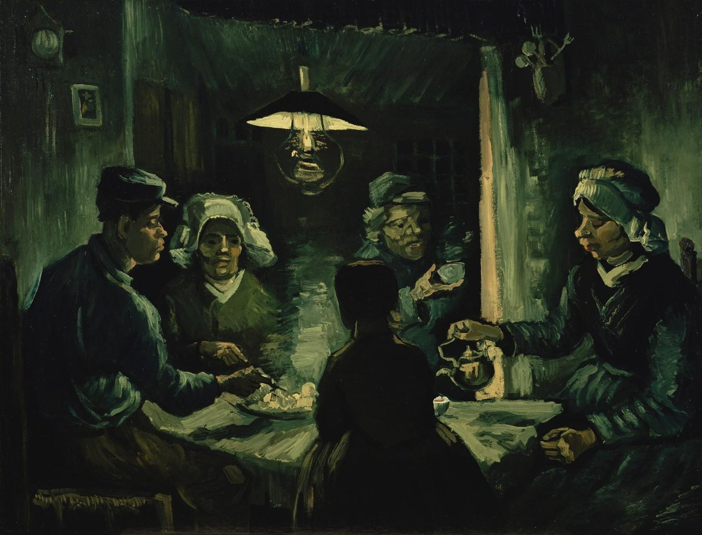
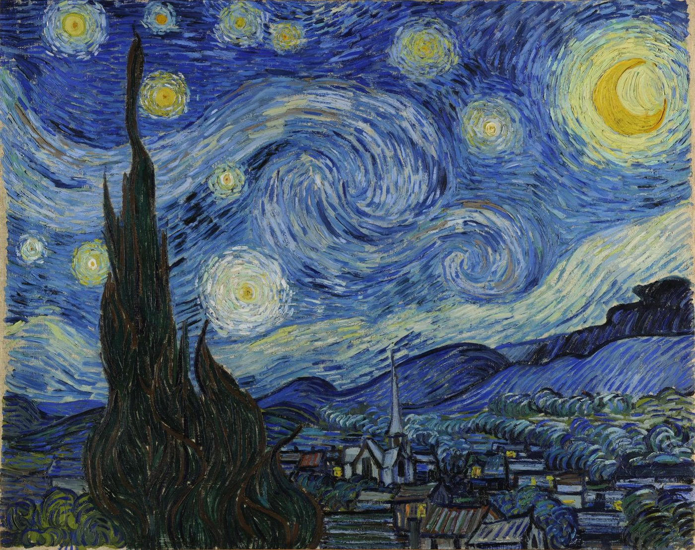

Biografia | Parte I: 1853–1885
Origens, Busca Religiosa e os Primeiros Anos em Nuenen
1. Infância e Primeiros Ofícios (1853–1876)
- Nascimento e Raízes: Nascido em Groot-Zundert, Holanda, filho do pastor calvinista Theodorus van Gogh, em ambiente severo e religioso.
- Comércio de Arte: Aos 16 anos ingressou na galeria Goupil & Cie (Haia, Londres e Paris), desenvolvendo vasto conhecimento de pintura.
- Desilusão Comercial: O contato com o mercado de arte burguês provocou profunda crise existencial, levando à demissão e à busca teológica.
2. A Missão em Borinage e o Rompimento (1876–1880)
- Evangelização Popular: Atuou como pregador laico voluntário entre os miseráveis mineradores de carvão em Borinage, Bélgica.
- Solidariedade Radical: Abdicou de roupas e acomodações dignas para viver na indigência com os mineiros, sendo afastado por 'excesso de zelo'.
- Consciência Humanista: Essa dolorosa imersão consolidou seu compromisso com a dignidade dos oprimidos, germe de sua futura temática artística.
3. Decisão pela Pintura e o Período de Nuenen (1880–1885)
- Início aos 27 Anos: Em 1880, com apoio financeiro e incentivo do irmão Theo, decidiu dedicar sua vida exclusivamente à arte.
- Estudos em Haia: Recebeu orientação breve do pintor Anton Mauve, dominando o desenho anatômico e o estudo da perspectiva clássica.
- Retorno ao Seio Familiar: Fixou-se com os pais em Nuenen (1883–1885), produzindo centenas de desenhos de tecelões e trabalhadores do campo.
- Paleta Terrosa e Escura: Fase marcada por tons de turfa, cinza e marrom sombrio, refletindo a austeridade e o peso da labuta diária camponesa.
- A Grande Composição: Concluiu em maio de 1885 'Os Comedores de Batata', sua primeira tela monumental que sintetizou sua fase holandesa.
Biografia | Parte II: 1886–1890
Paris, a Luminosidade de Arles, Crises e Legado Póstumo
1. O Contato com a Vanguarda em Paris (1886–1888)
- Mudança para a França: Instalou-se com o irmão Theo em Montmartre, conhecendo Pissarro, Toulouse-Lautrec, Bernard e Gauguin.
- Clareamento da Paleta: Abandonou os tons terrosos holandeses em favor de cores vivas e luminosas da técnica impressionista.
- A Paixão pelo Japonismo: Adquiriu centenas de gravuras japonesas ('ukiyo-e'), cujas linhas de contorno influenciaram decisivamente seu traço.
2. A Casa Amarela e o Sanatório de Saint-Rémy (1888–1889)
- O Ateliê do Sul: Mudou-se para Arles visando criar uma comunidade artística; conviveu dois meses conturbados com Paul Gauguin.
- A Crise da Orelha: Após violenta discussão com Gauguin em dezembro de 1888, feriu a própria orelha esquerda, marcando grave colapso emocional.
- Internação Voluntária: Ingressou em Saint-Paul-de-Mausole em Saint-Rémy (1889), onde pintou obras-primas como 'A Noite Estrelada'.
3. Auvers-sur-Oise, Desfecho e Consagração Póstuma (1890)
- Últimos Meses: Em maio de 1890 mudou-se para Auvers-sur-Oise sob supervisão médica do Dr. Paul Gachet, amigo dos pintores.
- Produção Vertiginosa: Pintou mais de 70 telas em apenas 70 dias, incluindo trigais extensos, retratos e a igreja local de Auvers.
- Falecimento Trágico: Em 27 de julho foi atingido por disparo de arma de fogo no peito, falecendo dois dias depois nos braços de Theo.
- A Morte de Theo: Theo van Gogh morreu seis meses após Vincent, deixando o acervo aos cuidados de sua esposa Jo van Gogh-Bonger.
- Consagração Histórica: Jo organizou as correspondências e exposições póstumas, transformando Van Gogh em ícone supremo da arte universal.
Contexto Histórico | Parte I: 1850–1880
Revolução Industrial, Mudança Social e o Advento da Fotografia
1. Segunda Revolução Industrial
- Expansão Fabril e Urbana: Consolidação acelerada da siderurgia, malhas ferroviárias e mineração de carvão na Europa Ocidental (Bélgica, França e Alemanha).
- Contrastes de Classe: Aumento dramático do abismo entre a opulência da burguesia financeira e a extrema precariedade material das massas operárias e rurais.
- Tensões Sociais e Ideológicas: Período de efervescência teórica com o surgimento do sindicalismo organizado, do socialismo científico e de movimentos de greve operária.
- Impacto na Sensibilidade de Vincent: A convivência direta com os mineiros em Borinage definiu sua recusa ao esteticismo fútil e seu apreço pela autenticidade do povo humilde.
- O Olhar Crítico sobre a Máquina: Embora fascinado pelo progresso do transporte, Van Gogh temia a desumanização mecânica provocada pelo ritmo das novas fábricas.
2. A Invenção da Fotografia
- Ameaça ao Mimetismo: A difusão técnica do daguerreótipo e de retratos fotográficos tirou da pintura a exclusividade do registro documental exato da realidade.
- Libertação da Linguagem Pictórica: Sem a obrigação de copiar mecanicamente o mundo externo, os artistas conquistaram liberdade para explorar dimensões subjetivas e estruturais.
- A Cor como Emoção Pura: A impossibilidade inicial de reproduzir cores nas fotos estimulou a pesquisa plástica em torno das harmonias cromáticas e dos contrastes simultâneos.
- Conceito Estético Van-Goghiano: Van Gogh afirmava categoricamente: 'Em vez de tentar reproduzir o que tenho diante dos olhos, uso a cor para me expressar com mais força'.
- Transfiguração da Matéria: A textura espessa e tátil da tinta a óleo tornou-se a resposta artística incontestável à superfície plana e desprovida de relevo do papel fotográfico.
3. A Ruptura Impressionista (1874)
- Ruptura com os Salões Oficiais: Em 1874, Monet, Renoir, Degas e Pissarro desafiaram as normas da Academia francesa ao organizar a 1ª Exposição do grupo independente.
- A Pintura ao Ar Livre ('Plein Air'): Abandono da iluminação cenográfica do ateliê fechado em busca da observação direta dos efeitos efêmeros da luz solar natural.
- Pincelada Fragmentada e Ótica: Substituição do acabamento acadêmico polido por toques rápidos e cores justapostas que se fundem na retina do próprio observador.
- Recepção Inicial Hostil: Ridicularizados pela crítica conservadora como 'inacabados', os impressionistas transformaram irreversivelmente a história visual do Ocidente.
- Herança Absorvida por Van Gogh: Essa rebelião estética abriu caminho para que Van Gogh, anos mais tarde em Paris, clareasse radicalmente sua paleta e seus horizontes.
Contexto Histórico | Parte II: 1880–1890
Superação da Luz Ótica, Simbolismo e Raízes Modernas
1. A Afirmação Pós-Impressionista
- Insatisfação com o Efêmero: Artistas como Van Gogh, Cézanne, Gauguin e Seurat consideraram o Impressionismo excessivamente fugaz e dependente da impressão ótica exterior.
- Resgate da Forma e da Ideia: Cézanne buscou a geometria estrutural da natureza; Seurat formalizou o pontilhismo; Gauguin investigou a simplificação mística e o sintetismo.
- Subjetividade Espiritual e Moral: Para Van Gogh, a tela converteu-se em diário íntimo e desabafo existencial, guiado não pela retina, mas pelas profundezas do espírito.
- Ruptura com o Espaço Clássico: A perspectiva geométrica renascentista foi gradativamente desmantelada em favor de composições guiadas pelo ritmo emocional e simbólico.
- Marco Inicial da Arte Contemporânea: O Pós-Impressionismo fundou o princípio moderno de que a arte tem valor autônomo, não dependendo de retratar fielmente a natureza visível.
2. A Onda do 'Japonismo'
- Abertura Comercial Meiji: A reabertura dos portos japoneses no século XIX inundou as capitais europeias com xilogravuras em madeira ('ukiyo-e') de mestres orientais.
- Novos Paradigmas Visuais: As estampas japonesas fascinaram pela ausência de sombras esfumadas, cores puras aplicadas em planos chapados e linhas de contorno expressivas.
- Composições Arrojadas: Uso de pontos de vista elevados, enquadramentos diagonais e assimetrias que romperam a centralidade composicional da tradição europeia.
- Apropriação Criativa de Vincent: Van Gogh comprou centenas de gravuras em Paris, pendurou-as nas paredes de seu ateliê e chegou a reproduzir a óleo obras célebres de Hiroshige.
- Síntese nos Períodos de Arles e Saint-Rémy: O aprendizado com a gravura oriental permitiu a Vincent estilizar contornos e sintetizar campos cromáticos luminosos com máxima clareza.
3. Gênese das Vanguardas do Século XX
- O Gesto como Matéria Viva: Ao aplicar a tinta a óleo em relevo visível e empastado, Van Gogh fez do próprio ato físico de pintar uma manifestação emocional imediata.
- Fundamento do Expressionismo: Sua obra exerceu influência direta e fundacional sobre o Expressionismo alemão ('Die Brücke' e 'Der Blaue Reiter') e sobre o norueguês Edvard Munch.
- A Força Cromática do Fauvismo: O emprego de cores puras, contrastantes e arbitrárias inspirou diretamente Henri Matisse e André Derain na criação do Fauvismo em 1905.
- A Pintura como Testemunho Humano: Provou que o sofrimento, o arrebatamento e a fraternidade humana poderiam ser traduzidos em ritmos visuais de extraordinária potência.
- Imortalidade na História da Arte: Sua trajetória transformou o conceito de artista moderno: alguém que transcende seu tempo histórico para tocar a sensibilidade de toda a humanidade.
Linha Cronológica | 1853–1890
Paralelo entre o Contexto Europeu e a Trajetória de Van Gogh
História
Van Gogh
História: 1853 – 1869
Segunda Revolução Industrial
- Expansão ferroviária e industrial na Europa.
- Reformas urbanas de Haussmann em Paris.
- Difusão do daguerreótipo e da fotografia.
Van Gogh: 1853 – 1869
Infância e Formação
- Nascimento em Groot-Zundert (1853).
- Infância em família calvinista severa.
- Ingresso na galeria Goupil em Haia (1869).
História: 1870 – 1879
Guerra e Impressionismo
- Guerra Franco-Prussiana (1870).
- 1ª Exposição Impressionista em Paris (1874).
- Crescimento do proletariado e lutas sociais.
Van Gogh: 1870 – 1879
Crise e Vocação Religiosa
- Atuação comercial em Londres e Paris.
- Crise de fé e abandono da Goupil.
- Missão entre mineiros em Borinage (1879).
História: 1880 – 1885
Naturalismo e Japonismo
- Literatura social de Émile Zola.
- Circulação do Japonismo nos salões de arte.
- Fortalecimento dos movimentos operários.
Van Gogh: 1880 – 1885
Decisão Artística e Nuenen
- Decide pintar com apoio de Theo (1880).
- Estudos de desenho em Bruxelas e Haia.
- Fase terrosa: 'Os Comedores de Batata' (1885).
História: 1886 – 1888
Pós-Impressionismo em Paris
- 8ª e última mostra impressionista (1886).
- Inauguração do Salão dos Independentes.
- Construção da Torre Eiffel iniciada.
Van Gogh: 1886 – 1888
A Luz de Paris e Arles
- Chegada a Paris (1886) e cores vivas.
- Convívio com Pissarro e Gauguin.
- Aluga a 'Casa Amarela' em Arles (1888).
História: 1889 – 1890
Belle Époque e Modernidade
- Centenário da Revolução Francesa (1889).
- Exposição Universal de Paris (1889).
- Emergência do Simbolismo e vanguardas.
Van Gogh: 1889 – 1890
Saint-Rémy, Auvers e Morte
- Internação voluntária no asilo (1889).
- Criação de 'A Noite Estrelada' (1889).
- Fase em Auvers e morte em julho de 1890.
Exposição | 1880–1890
As Três Fases Artísticas de Vincent van Gogh
Da penumbra camponesa da Holanda à luz de Paris e às cores incandescentes do Sul da França: dezoito pinturas mostram como a cor, a técnica, a composição e a emoção se transformaram em dez anos de trabalho.
Galeria | Autorretratos
Van Gogh por Van Gogh
Do esqueleto irônico de Antuérpia ao rosto sereno de Saint-Rémy, passando pelas cadeiras de Arles e pela orelha enfaixada: os retratos em que o artista registrou a si mesmo e a própria vida.
1ª Obra Analisada | Período Holandês (Nuenen, 1885)
“Os Comedores de Batata” (De Aardappeleters) — Vincent van Gogh

3. Ficha Técnica e Ano de Criação
- Título Original: De Aardappeleters (The Potato Eaters).
- Período de Execução: Abril a Maio de 1885 (Fase de Nuenen, Países Baixos).
- Técnica e Suporte: Óleo sobre tela, com dimensões de 82 cm × 114 cm.
- Localização Atual: Museu Van Gogh, Amsterdã (Coleção Permanente Nacional).
5. Perspectiva, Foco e Contexto
- Claro-Escuro Rembrandtesco: Iluminação focada descendente, herdada da tradição barroca holandesa de Rembrandt e Frans Hals.
- Ponto de Vista Imersivo: O observador é posicionado intimamente dentro do casebre enfumaçado, participando da ceia familiar.
- Marco de Autoria: Primeira obra que Van Gogh considerou madura para atestar seu valor no cenário artístico internacional.
1ª Obra Analisada | Período Holandês (Nuenen, 1885)
“Os Comedores de Batata” (De Aardappeleters) — Vincent van Gogh
1. Linguagem e Técnica Pictórica
- Estilo Realista-Expressivo: Linguagem rústica de teor naturalista e dramático, sem concessões ao decorativismo burguês.
- Cromatismo Terroso: Paleta austera dominada por marrons profundos, ocres e verdes-escuros sujos que remetem à cor da terra recém-cavada.
- Pincelada Espessa: Aplicação vigorosa e rugosa de tinta, valorizando a aspereza tátil dos rostos e vestimentas camponesas.
2. Significados, Temática e Simbolismo
- Dignidade da Labuta: O quadro celebra a honestidade moral dos trabalhadores que sobrevivem do próprio esforço braçal diário.
- Mãos que Lavram e Comem: Simbolismo fundamental: as mesmas mãos calejadas que partilham a batata no prato cavaram o solo para colhê-la.
- A Lamparina a Óleo: Fonte luminosa central que simboliza o refúgio do lar, a partilha comunitária e o calor humano em meio à miséria.
4. Personagens e Figuras na Obra
- A Família De Groot: Cinco camponeses sentados em volta de uma mesa tosca compartilhando uma travessa de batatas e chicória/café quente.
- Feições Desgastadas: Rostos angulosos com ossos salientes, olhares fatigados e testas franzidas marcadas pela severidade do clima e da pobreza.
- Ruptura com o Ideal Clássico: Ausência consciente de embelezamento, o que chocou a crítica da época mas conferiu genuinidade histórica à obra.
2ª Obra Analisada | Período de Saint-Rémy (1889)
“A Noite Estrelada” (De sterrennacht) — Vincent van Gogh

3. Ficha Técnica e Ano de Criação
- Título Original: De sterrennacht (The Starry Night).
- Data de Criação: Junho de 1889 (Sanatório de Saint-Paul-de-Mausole, Saint-Rémy-de-Provence).
- Técnica e Suporte: Óleo sobre tela, medindo 73,7 cm × 92,1 cm.
- Localização Atual: The Museum of Modern Art (MoMA), Nova York (adquirida em 1941, Lillie P. Bliss Bequest).
5. Perspectiva, Foco e Contexto
- Visão da Janela do Asilo: Concebida a partir da janela de seu quarto no sanatório, mas transfigurada inteiramente pela memória e imaginação.
- Realismo Astronômico: A estrela matutina mais brilhante corresponde à observação real do planeta Vênus naquele mês de junho de 1889.
- Consagração da Arte Moderna: Marco em que a visão subjetiva do criador se sobrepõe definitivamente à mera reprodução do mundo visível.
2ª Obra Analisada | Período de Saint-Rémy (1889)
“A Noite Estrelada” (De sterrennacht) — Vincent van Gogh
1. Linguagem e Técnica Pictórica
- Pós-Impressionismo Dinâmico: Linguagem revolucionária que antecede o Expressionismo, onde a emoção guia a forma e o movimento.
- Técnica de Empastamento: Pinceladas vigorosas, onduladas e espessas aplicadas diretamente na tela, conferindo textura e vibração rítmica.
- Cromatismo Complementar: Contraste dramático entre o azul-cobalto e o ultramarino do céu noturno com o amarelo-ouro e o branco das estrelas.
2. Significados, Temática e Simbolismo
- Êxtase Cósmico e Espiritual: Visão contemplativa e transcendental do universo, unindo anseios espirituais de redenção ao infinito da noite.
- O Cipreste Monumental: Árvore associada tradicionalmente ao luto e à vida eterna, funcionando como elo vertical unindo a Terra ao Céu.
- A Noite Viva: A noite não é tratada como escuridão morta, mas como um espetáculo grandioso, vibrante de energia vital e esperança.
4. Elementos e Figuras na Composição
- Céu Espiralado e Astros: Onze estrelas incandescentes circundadas por halos luminosos e uma lua crescente em turbilhão cósmico.
- O Cipreste em 1º Plano: Silhueta vegetal escura e chamejante que ocupa todo o flanco esquerdo, ancorando a perspectiva.
- A Aldeia Imaginada: Vila pacífica aos pés das colinas dos Alpilles, destacando-se a torre pontiaguda de igreja com traços holandeses.
Encerramento | Referências Culturais
OBRIGADO!!
Aluno: Patrício | Turma: 3B | Língua Portuguesa, Literatura e Artes